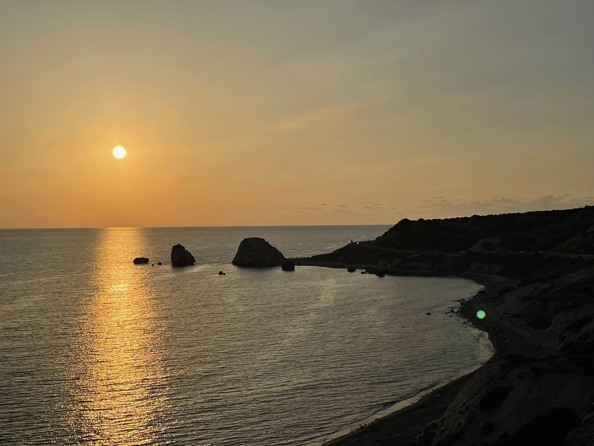
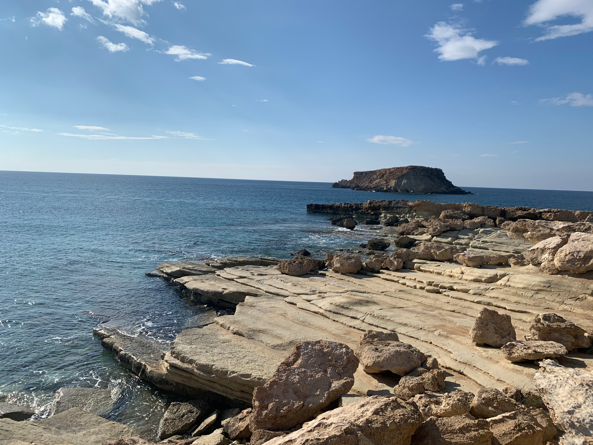
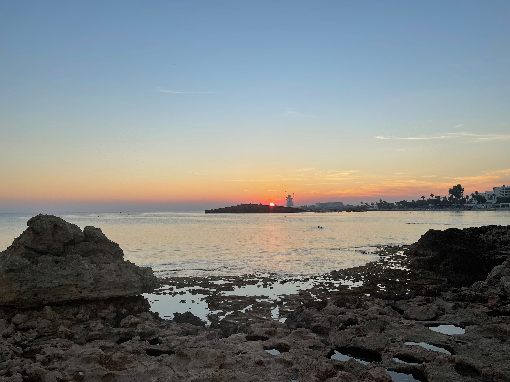

FORGED TITANIUM was developed from years of experience operating on global energy infrastructure projects in demanding and often unpredictable environments.
Personnel working on these projects are frequently required to operate under significant constraints - time, location, environment, security and access. Working in high-risk locations, travelling through areas affected by conflict or navigating changing political situations adds another layer of pressure, particularly when highly skilled and specialised personnel are expected to perform regardless of the conditions around them.
Technical expertise and project experience are essential, but they do not always provide the information needed to make sound decisions in unfamiliar or rapidly changing environments.
FORGED TITANIUM was built to bridge that gap.
We bring together structured intelligence on travel, crude oil infrastructure, gas and LNG infrastructure, and the environments in which people operate.
Our aim is simple: provide the information needed to understand the environment, prepare for the conditions and make informed decisions before personnel move.
Built in demanding conditions. Precision under pressure.


Travel Intelligence (TI): country-by-country entry, security, health and emergency intelligence for personnel operating across covered territories.
Crude Oil Intelligence (OI): upstream and midstream infrastructure intelligence covering operators, facilities, access routes and on-the-ground considerations for oil-sector travel.
Gas & LNG Intelligence (GI): pipeline, gas-field and LNG infrastructure intelligence supporting regional operations, personnel movement and site access.